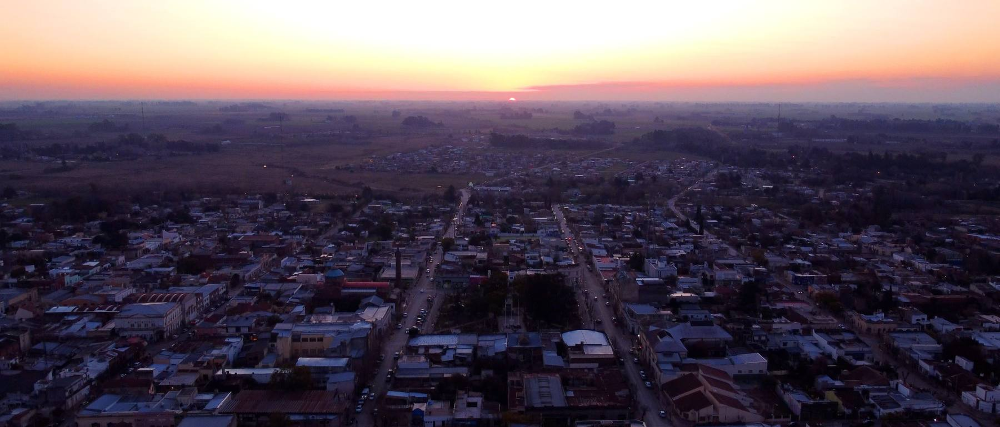

San Andrés de Giles · Obras particulares
Empezá por tu parcela, contá con tus palabras qué vas a construir o declarar y revisá si cumple con el Código de Ordenamiento Urbano. La planilla estima honorarios mínimos, pagos al Colegio y a la Caja, derechos municipales y gastos del trámite.